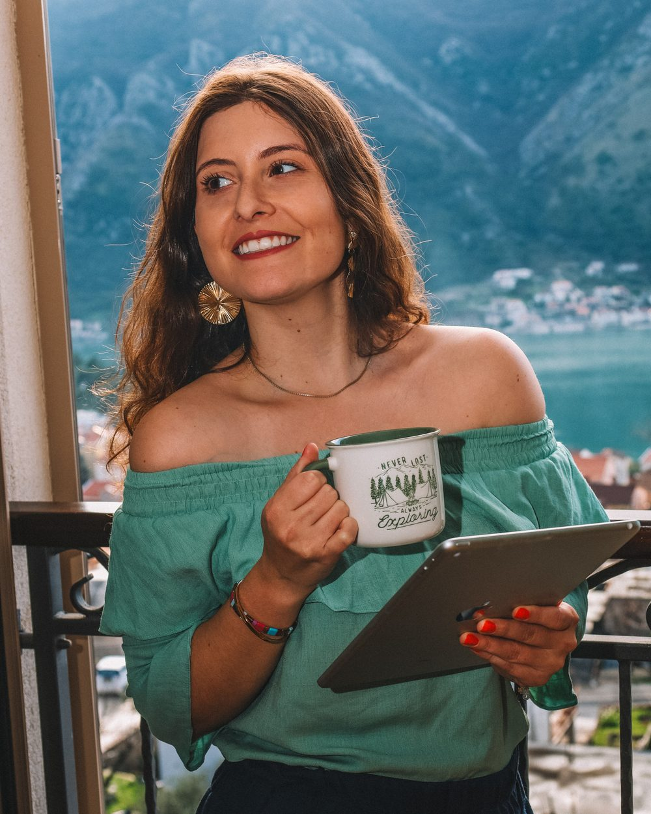
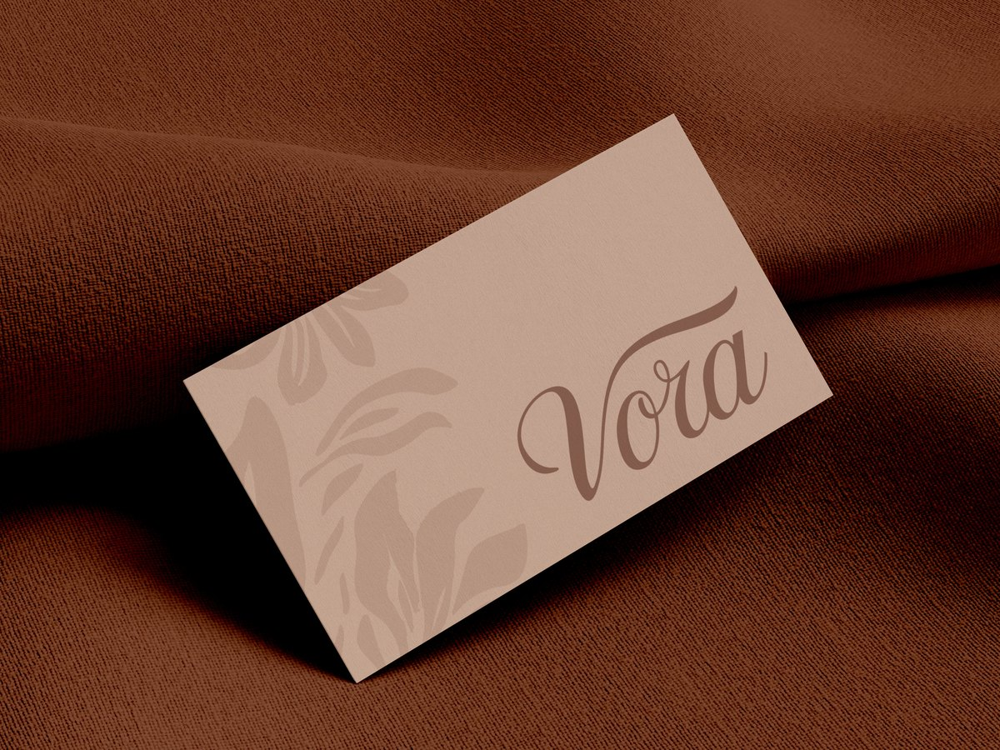
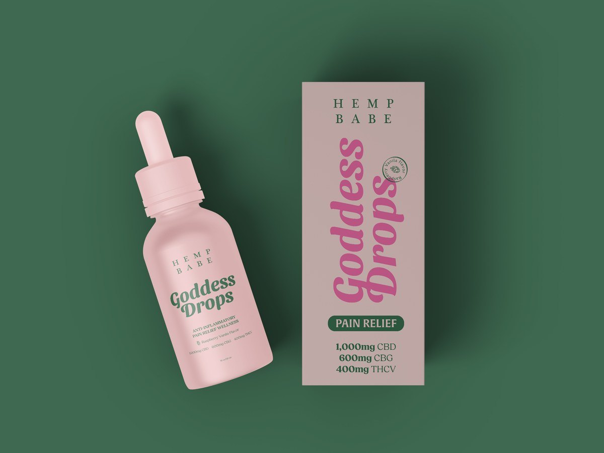

Hi, I'm Julia, a brand designer
Brand & graphic designer · Creative director
I'm a brand and graphic designer with 9 years in the industry. Today I run my own studio, Buenas Design Studio, and I'm creative director at Zipcode Creative, leading branding for real estate and multifamily brands in the US.
Brand identity is where I feel most at home: concepts, typography, visual systems, and everything a brand needs once it leaves the presentation. I've also spent years on marketing design, from social media to catalogs and email campaigns.
I'm organized and detail-oriented. I care about the files I deliver as much as the design, and I like everyone to know where their project stands.



How I got here
From my first internship in Brazil to leading brand work for US clients from Spain.
-
2016 – 2022
Bachelor's Degree, Advertising
University of Caxias do Sul (UCS) · Brazil
Where it all started.
-
Sep 2017 – Jul 2021
Marketing Designer & Social Media
Somma Comunicação · Caxias do Sul · Brazil
My first design job. I started as an intern and stayed almost four years, designing social media content, paid campaign creative and printed pieces.
-
Sep 2021 – Jul 2022
Graphic Designer
Mindsy Design Studio · Part-time · Remote · United States
My first job with a studio in the US. I created and looked after design systems and style guides, with a lot of projects running at the same time.
-
Sep 2022 – Present Now
Founder & Creative Director
Buenas Design Studio · Full-time · Remote
I started working full-time on my own studio. We create brand identities, content and social media for clients in different countries, and a big part of the work is white-label branding for agencies, most of them in the US and Canada.
-
Jan 2025 – Present Now
Graphic Designer
ZOOMcatalog · Contract · Remote · United States
Digital catalogs of promotional products for B2B clients, plus the campaigns around them: emails, newsletters and banner ads, all in one consistent visual identity.
-
Sep 2025 – Present Now
Creative Director
Zipcode Creative · Contract · Remote · United States
I lead the visual direction for real estate and multifamily brands: apartment communities, new developments and property brands. Research and mood boards come first, then I guide the designers through every piece.
-
Sep 2026 – Present Now
Postgraduate Degree, Creative Design
Universitat Politècnica de València (UPV)
Back to studying, this time in Spain.
What I'm good at
- Brand identity & visual systems
- Creative direction
- Brand guidelines
- Design systems
- Social media & content design
- Marketing & campaign design
- Catalog & editorial layout
- Print design
- Web design
Languages
- PortugueseNative
- EnglishFluent
- SpanishAlmost fluent
- ItalianBeginner
Tools
Contact
- Based in Spain · Working remotely worldwide
- oi@juliasonda.com
- linkedin.com/in/juliasonda
- behance.net/juliasonda
Selected work
See all projects →


Prefer the one-page version?
Here's my CV as a PDF, ready to attach to an application. The same story is on LinkedIn too.
Julia Sonda
Brand & Graphic Designer
Hello, I'm Julia!
I'm a brand and graphic designer with 9 years in the industry. Today I run my own studio, Buenas Design Studio, and I'm creative director at Zipcode Creative, leading branding for real estate and multifamily brands in the US.
Brand identity is where I feel most at home: concepts, typography, visual systems, and everything a brand needs once it leaves the presentation. I've also spent years on marketing design, from social media to catalogs and email campaigns.
I'm organized and detail-oriented. I care about the files I deliver as much as the design, and I like everyone to know where their project stands.
- Emailoi@juliasonda.com
- BēBehancebehance.net/juliasonda
- Websitejuliasonda.com
- inLinkedInlinkedin.com/in/juliasonda
- LocationBased in Spain · Working remotely worldwide
Experience
-
Buenas Design Studio · Full-time
Sep 2022 – Present
Founder & Creative Director
Remote
- Brand identities, content and social media strategy for clients in different industries and countries.
- White-label branding and design for marketing agencies and creative studios, most of them in the US and Canada.
- Design systems that go from brand guidelines to full sets of marketing assets.
- Building a team of creative professionals and looking after client relationships.
-
Zipcode Creative · Contract
Sep 2025 – Present
Creative Director
Remote · United States
- Visual direction of branding for real estate and multifamily clients: apartment communities, developments and property brands.
- Turning market research and client input into visual concepts, mood boards and a look and feel that sets each community apart in its rental market.
- Directing designers through brand asset development and keeping quality consistent across every touchpoint.
- Managing timelines together with the project managers.
-
ZOOMcatalog · Contract
Jan 2025 – Present
Graphic Designer
Remote · United States
- Digital catalogs showcasing promotional products for B2B clients.
- Campaign assets across marketing channels: email marketing, newsletters, banner ads and display graphics.
- Keeping the visual identity consistent across every deliverable.
-
Mindsy Design Studio · Part-time
Sep 2021 – Jul 2022
Graphic Designer
Remote · United States
- Design concepts and materials for different media, following each client's brand.
- Created and maintained design systems and style guides.
- Handled several projects and deadlines at once, with market research to back up design decisions.
-
Somma Comunicação
Sep 2017 – Jul 2021
Marketing Designer & Social Media
Caxias do Sul · Brazil
- Content creation and management for social media, including paid campaign creative.
- Design for digital and print, plus reports on campaign results.
- Started here as a design intern (Sep 2017 – Sep 2018).
Education
-
Sep 2026 – Present
Postgraduate Degree, Creative Design
Universitat Politècnica de València (UPV)
-
2016 – 2022
Bachelor's Degree, Advertising
University of Caxias do Sul (UCS) · Brazil